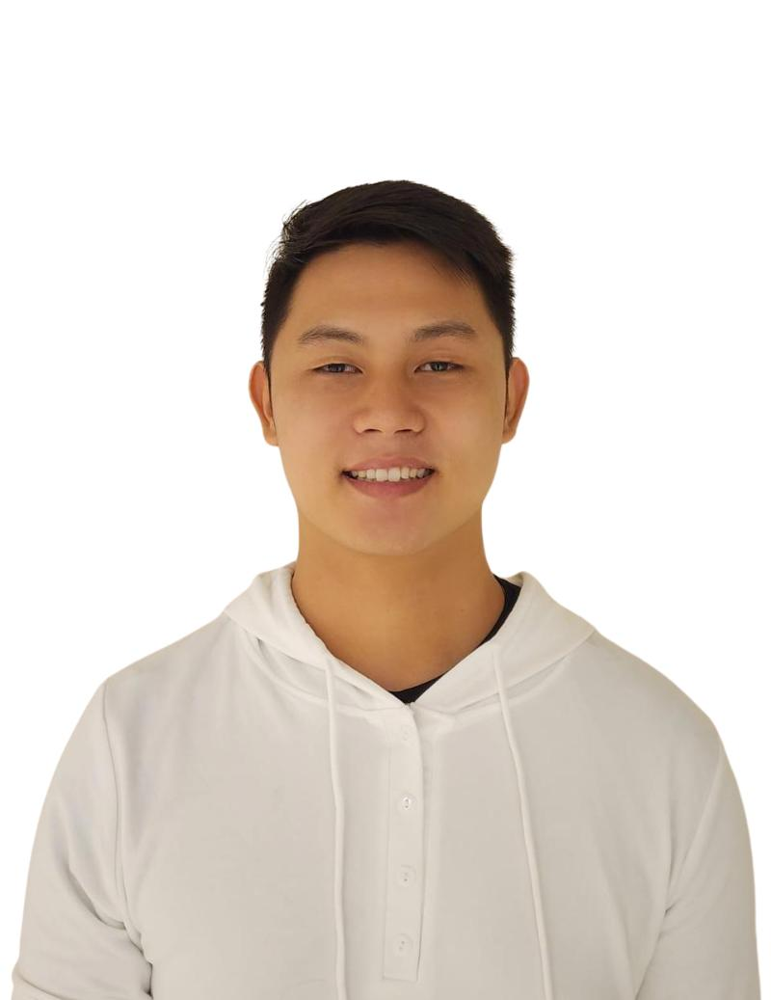

-

Alexander Dennis Isidro Mamani
RM 565554

Descrição
Olá! Sou o Alexander, tenho 18 anos e estou cursando Análise e Desenvolvimento de Sistemas na FIAP. Tenho grande interesse pela área de desenvolvimento back-end, onde pretendo construir minha carreira. Estou sempre buscando aprender novas tecnologias, resolver problemas de forma eficiente e contribuir para soluções inovadoras.
-

Kelson Zhang
RM 563748
Descrição
Com início na área de gastronomia, desenvolvi minha carreira voltada para a gestão de alimentos e bebidas, com experiência em coordenação de equipes e controle de qualidade. Atuei na startup Eatopia, referência nacional em cozinhas para delivery, e posteriormente integrei a equipe responsável pelo serviço premium de A&B do Allianz Parque, onde aperfeiçoei habilidades em liderança, trabalho em equipe e gestão de compras. Atualmente, estou em transição para a área de tecnologia, cursando TADS na FIAP e especializando-me em desenvolvimento web por meio do curso DevQuest Full-Stack. Sou movido por curiosidade, disciplina e desejo constante de aprendizado e crescimento profissional.
-
.png)
Lucas Rossoni Dieder
RM 563770
Descrição
Olá sou o Lucas, tenho 19 anos e sou um estudante de Análise e Desenvolvimento de Sistemas na FIAP, sempre em busca de aprendizado e desafios. Tenho grande interesse por desenvolvimento de software e tecnologia, e estou em busca da minha primeira oportunidade profissional para aplicar na prática o que venho estudando. Sou um profissional em formação com facilidade para aprender novas tecnologias e me adaptar a diferentes ambientes. Gosto de resolver problemas, trabalhar em equipe e colaborar em projetos que geram impacto.